Boss attack overhaul · benchmark 1 of 6 · for crnuch's approval
Magistrate Megalodon: Fin Charge
The new charge, with every beat keyed in Blender to the server's own timing. When two or more players are on the island, he now runs a Feeding Frenzy as well. None of this is in Studio yet; it goes in once you approve it.
Cinematic cut: close on the turn and coil, a camera tracking the run, close again on the skid, dizzy and recovery. Real speed.
Windup 1.0 s
Charge 0.87 s
Dizzy 2.0 s
Recover 0.6 s
01.01.873.874.47 s
Widths are the server's real seconds (BossService "Line" + Config): a 130-stud charge at 150 studs/s. The Blender preview runs on this exact timeline, and the game's clips are exported from the same keys.
The mouth (your notes, round 2)
The teeth are now solid 3D teeth set in red gums, inside a real mouth cut into his face. When he yells, cheek flaps on each side open at half the jaw's angle, so his head stays joined to his body with no gap at the sides. With the mouth shut, the flaps hide inside.
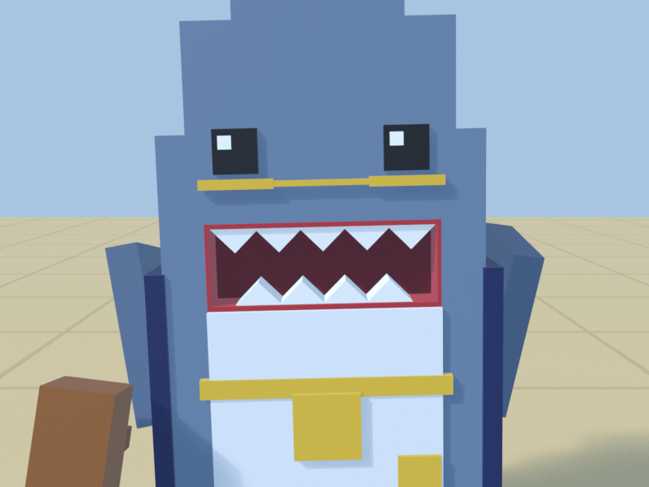
Shut: the teeth sit inside the mouth, not painted on the face.
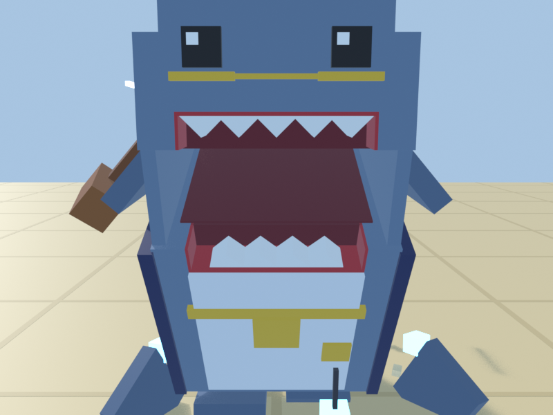
Wide open (the launch): top teeth ride up with the head, and the cheeks keep the sides closed.
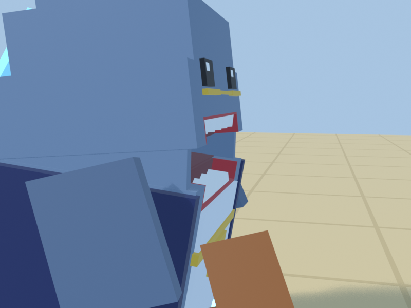
From the side as he skids: the head and body stay connected.
Storyboard
A · Anticipation windup 0 – 1.0 s
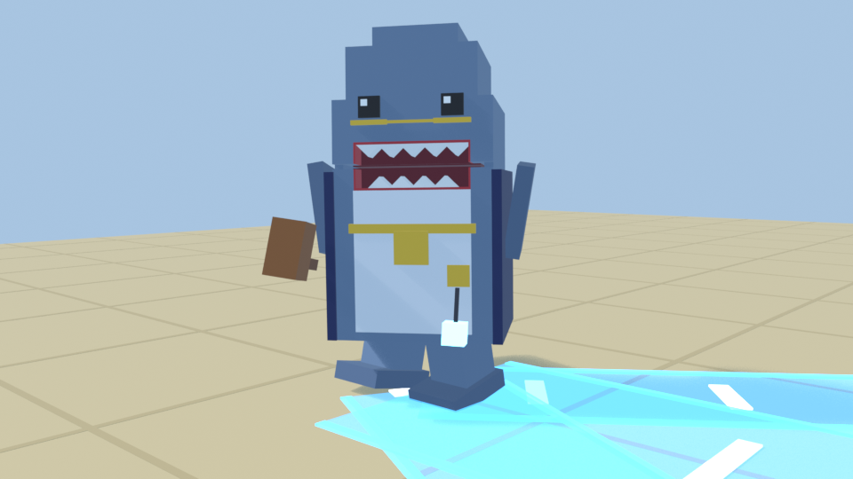
0.02 s Detect: the snout jerks up in a sniff while he still faces the old way.
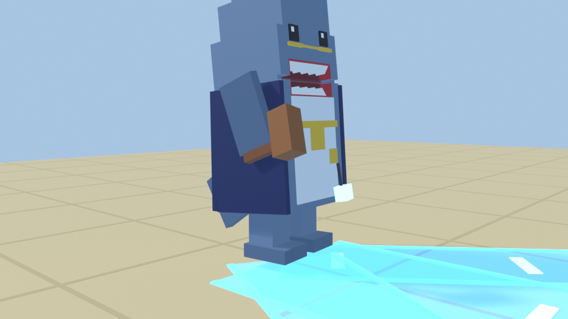
0.12 s The turn: he whips round with a little hop and overshoots by about 8°. The head leads.
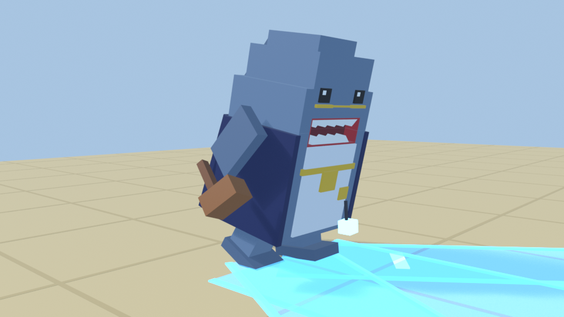
0.40 s Coil and dig: he squashes into a crouch, sweeps his fins back and scrapes the sand like a bull.
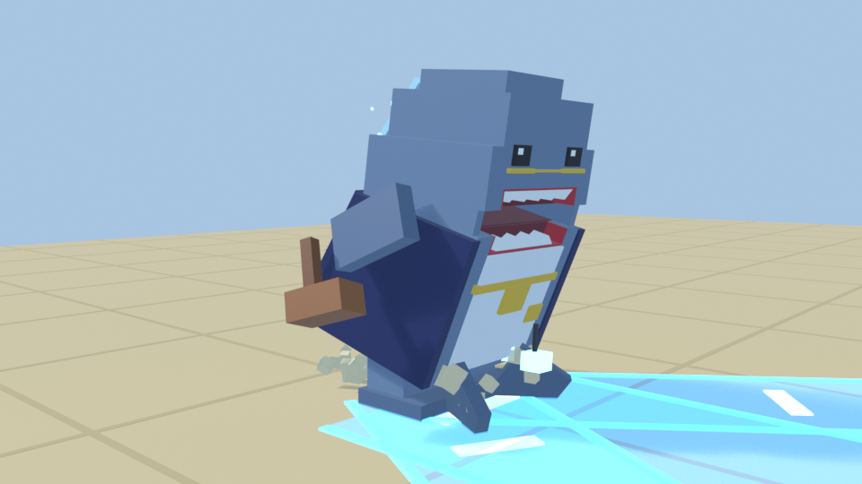
0.70 s Fin glow: the dorsal fin lights electric blue and crackles. His jaw parts in a grin and he starts to tremble.
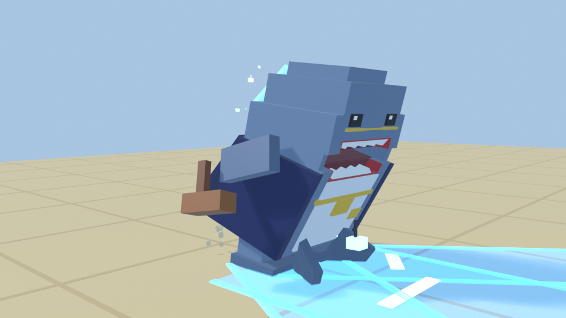
0.97 s Final sink: one last drop to load the spring.
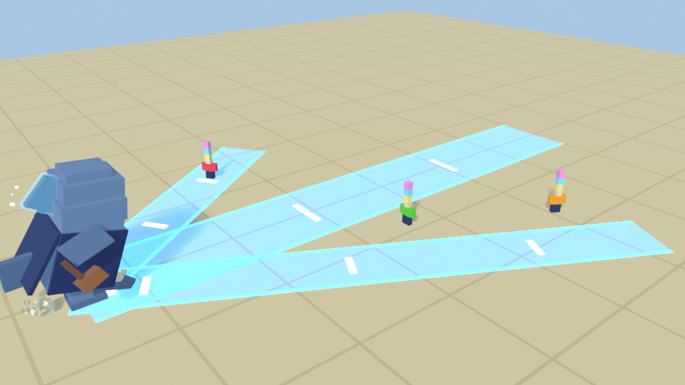
0.70 s From a player's height: the 20-wide charge strip plus a 12-wide frenzy lane for each other player. All three show from the windup's first frame, and nothing covers them.
B · Attack charge, linear on the server's path
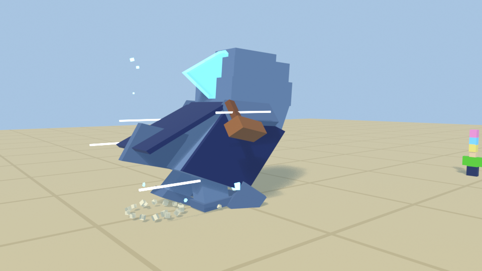
+0.05 s Launch: the squash snaps to a stretch in 2 frames, the jaw opens wide and a ring and a dust burst go off at the start.
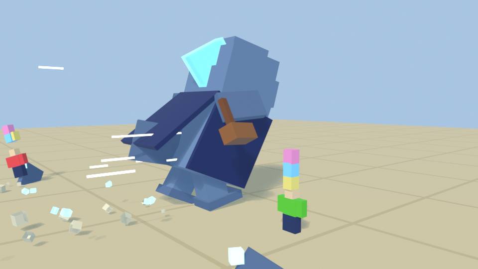
+0.40 s Run: a two-stride cycle with chomping jaws, fins swept back and the cape streaming. Speed streaks, sand from his feet and spray off his sides.
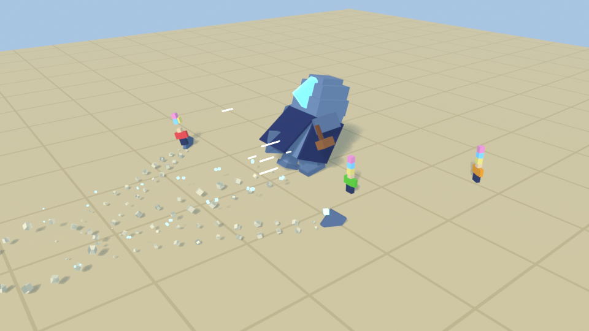
+0.40 s Feeding Frenzy: sand-shark fins race down the lanes at 120 studs/s while he charges.
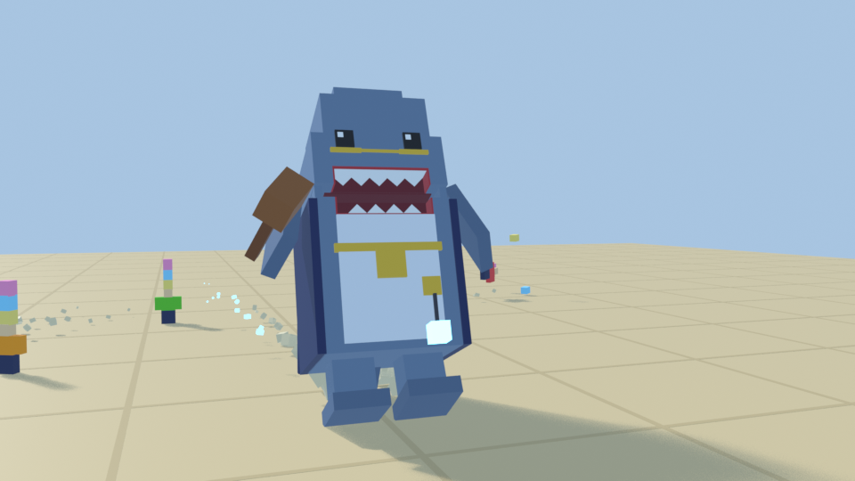
last 0.2 s Brake: he leans back hard and his feet plough forward, throwing a sand plume ahead.
C · Impact and D · Recovery dizzy 2.0 s · recover 0.6 s
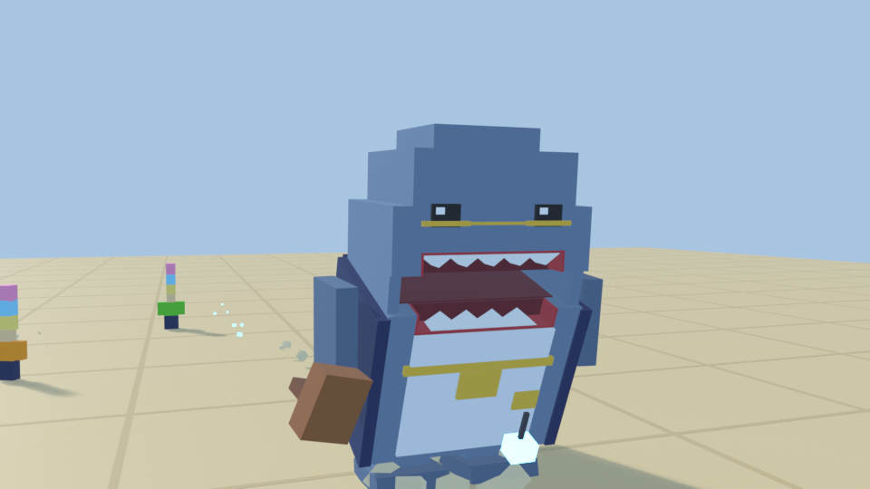
dizzy 0.10 s Skid settle: he overshoots forward, squashes on the stop and rocks back.
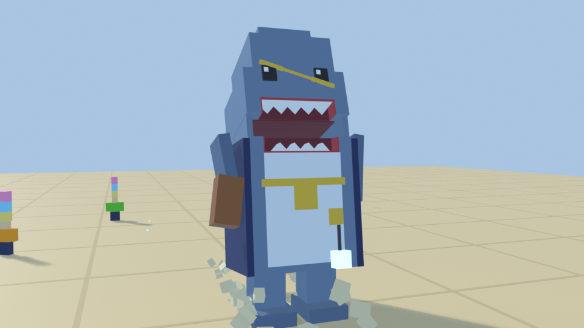
dizzy 0.25 s His glasses jump up and land crooked.
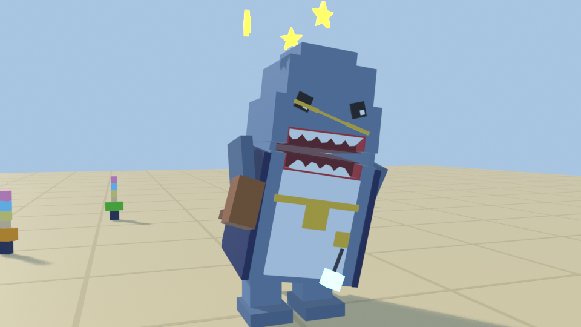
dizzy 1.0 s Dizzy: his body circles and his head lolls. His eyes spin opposite ways and gold stars orbit his head.
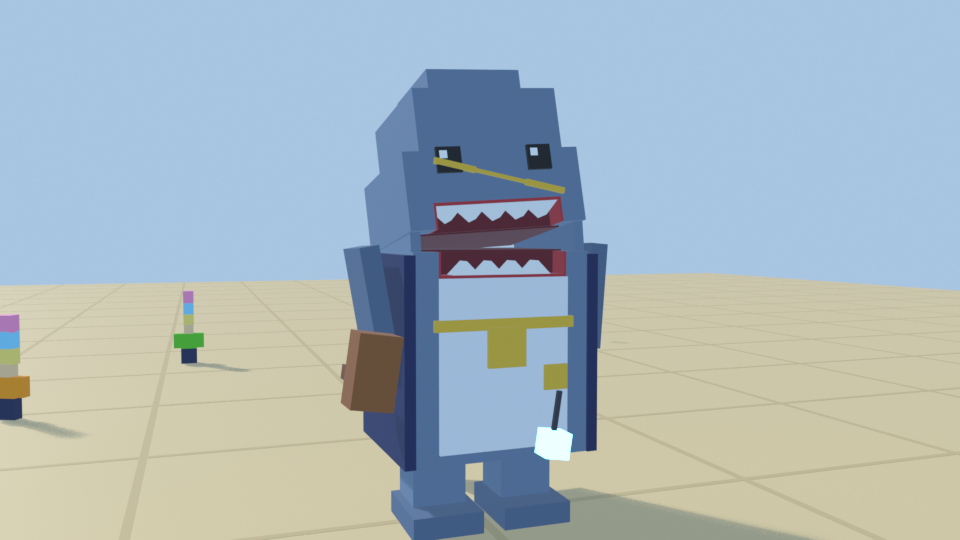
recover 0.12 s Wet-dog shake: a fast shake that flings drops, with the cape and lure flicking.
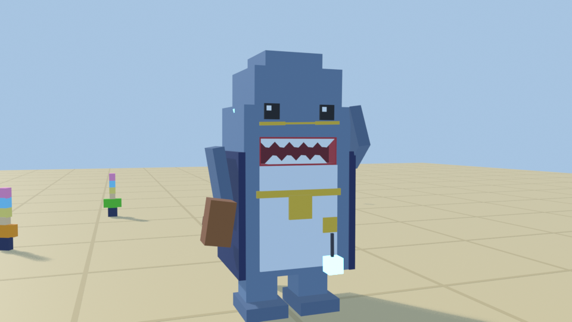
recover 0.40 s He straightens his glasses with his left fin and snaps his jaw shut.
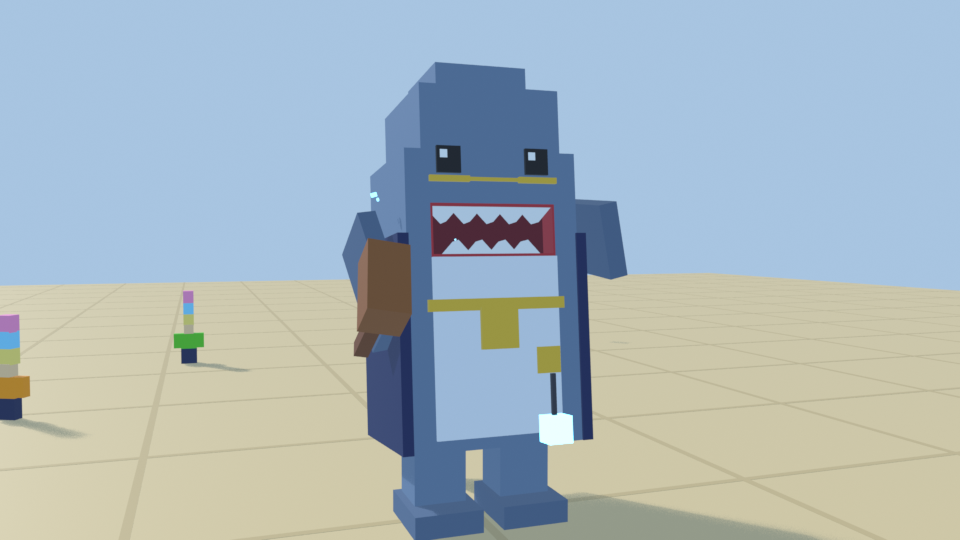
recover 0.50 s Chest puff and a gavel tap, then back to stalking.
More players, more danger
With one player on the island nothing changes. With two or more, each attack also aims a ranged add-on at up to two other players within 90 studs. It is warned from the same windup and narrower than the main attack, and it aims where they stood, so moving dodges it. A hit works like any other hit. The other five are proposals, built with each boss's own animation pass.
Boss
Crowd add-on
Shape
State
Magistrate Megalodon
Feeding Frenzy: sand-shark fins race down a lane at each other player
Lane 12 wide, 120 studs/s
Built (src/)
The Senior Partner
Paper Storm: the briefcase bursts open and lobs case files at the others
Disc r 10, lands with the swing
Proposal
Barrister Bulldog
Echo Bark: the sound wave travels to each other player and goes off around them
Disc r 12, with the bark
Proposal
Judge Martello
Gavel Rain: a mini gavel drops on each other player's spot
Disc r 12, with the slam
Proposal
Prosecutor Big Cheese
Wheel Split: two cheese wedges peel off and roll at the others
Lane 12 wide, 110 studs/s
Proposal
Chief Justice Eclipse
Gavel Volley: each orbiting gavel locks onto a different player (the Pull already reaches everyone within 44)
Disc r 10 under each
Proposal
What changed
Model: Megalodon went from 6 to 14 moving parts: a hinged jaw with a real mouth, 3D teeth and cheek flaps, the dorsal fin with a glow shell, both eyes, glasses, lure and cape.
Animation: six Blender clips (windup, launch, run loop, brake, dizzy, recover) with squash and stretch. The game cross-fades into them from the walk.
Effects: sand puffs, speed streaks, side spray, launch ring, skid plume, fin sparks, wet-dog drops and gold dizzy stars, all from textures the game already has. Nothing new to upload.
Sound: sniff, paw scrape, launch splash, skid and shake-off, all from the game's licensed set.
Gameplay: no change for one player. The Feeding Frenzy only adds attacks when 2+ players are present.
Checked
Timing: clip lengths match Config (windup 1.0, dizzy 2.0) and BossService (recover 0.6). A new automated check fails if they drift.
Clipping: every block was tested against every other part, every frame. The worst left is 0.33 studs on a 26-stud boss, for one frame. Four real clips were found and fixed (tail, dorsal fin, cape, glasses fin).
Fair: the warnings appear on the windup's first frame and dust stays low and behind him. A player at base speed clears a frenzy lane in 0.19 s.
Repo checks: all Luau compiles, 42 config checks pass and the sim tests pass.
Not tested yet: a live playtest in Studio. That happens after approval.
Your call
Approve Megalodon? If yes, it goes into Studio for a 1-player and a 3-player playtest, then the same treatment for the other five, one at a time.
Targeting: your brief says he turns to "the player carrying eggs". Today he targets the nearest player. Keep nearest, or prefer egg carriers? Switching is a small server change.
The five crowd add-ons above: OK as designed, or change any of them?